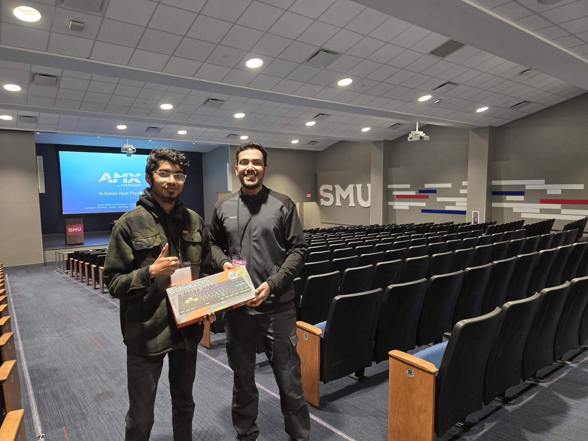
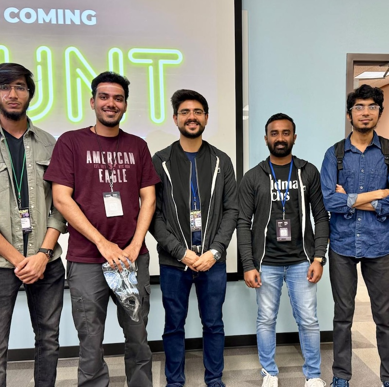
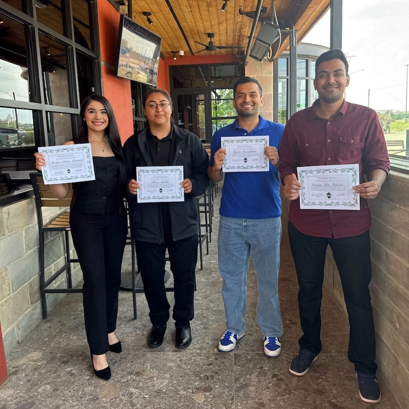
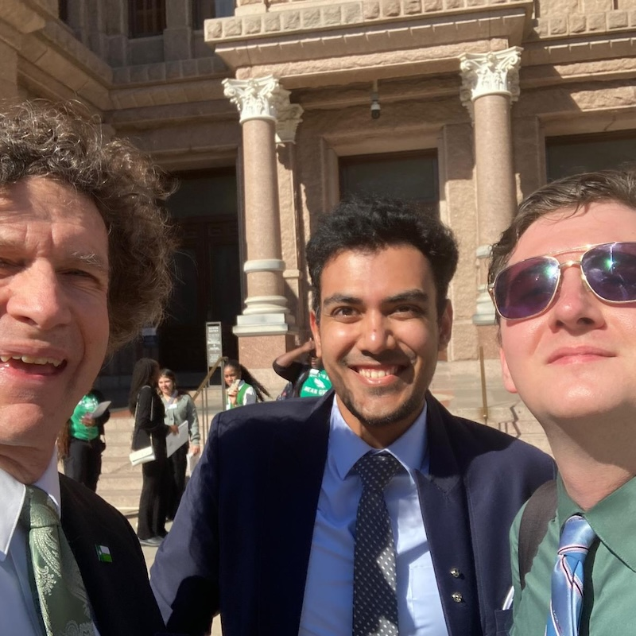
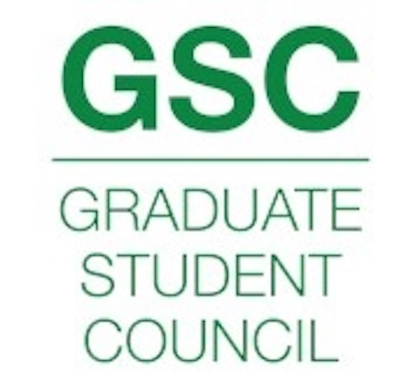

Beyond the Code
Hackathon wins, academic recognition, and the people and places along the way.
Hackathons & Awards

M.S. Computer Science · UNT 2025
Graduated with a 4.0 GPA from the University of North Texas. Two years of coursework, projects, and research that sharpened my approach to building systems that actually hold up under pressure.

HackSMU · ParkHub Track
Built a real-time vehicle detection pipeline under hackathon constraints — limited time, limited compute. We trained on 4,500 images, hit 90%+ accuracy, and won the ParkHub track. The win came down to getting the architecture right: GPU inference in Docker with RabbitMQ handling async load.
View on GitHub
UNT Business Analytics Hackathon · Peterbilt
Peterbilt gave us a dataset of truck configurations and asked us to find what drives warranty costs. We built an XGBoost model, hit 80% accuracy, and the visualizations we built alongside it are what earned us second place. Real industry data, real constraints.

UNT Hackathon · Goldman Sachs Track
Recognized by Goldman Sachs for building a phone scam detection application. The problem was real — scam calls affect millions — and we treated it that way. Practical ML solution, well executed under time pressure.
UNT College
of Engineering
Dean's Engineering Scholarship · 2024–2025
Awarded by the UNT College of Engineering in recognition of academic excellence. Finishing a master's degree with a 4.0 while working full-time takes some doing — this was a good reminder that it was noticed.
Campus Involvement

Web Developer · UNT College of Visual Arts & Design
Managed web content for CVAD Celebrates and NEST Events, working closely with the university's brand and communications teams. The job was part technical, part editorial — keeping content fresh, accessible, and on-brand.
Visit CVAD News →
Engineers United · UNT
Coordinated engineering events including HackUNT, helping bring students together across disciplines. More logistics than glamour, but seeing a well-run event come together is its own kind of satisfaction.
@unteu on Instagram

Nominated MemberGraduate Student Council · UNT
Nominated to represent graduate students as part of the GSC. Traveled to the Texas State Capitol with a student delegation to advocate for UNT funding and engage directly with state senators on legislative initiatives. Not the typical engineering experience — and better for it.